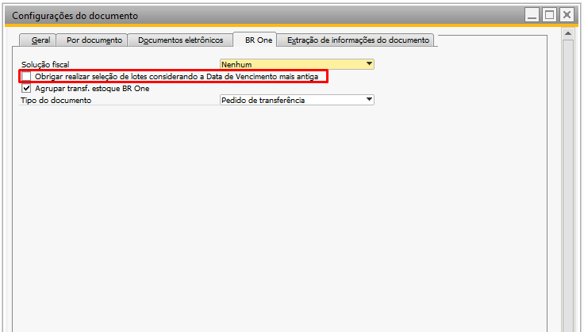
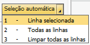
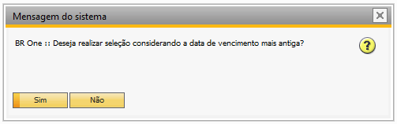
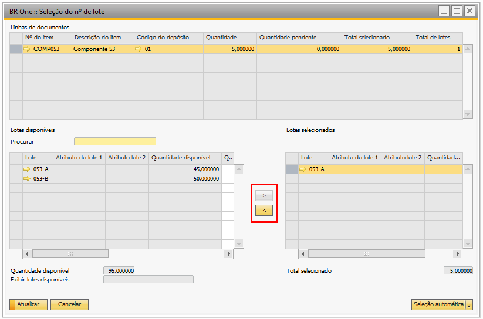
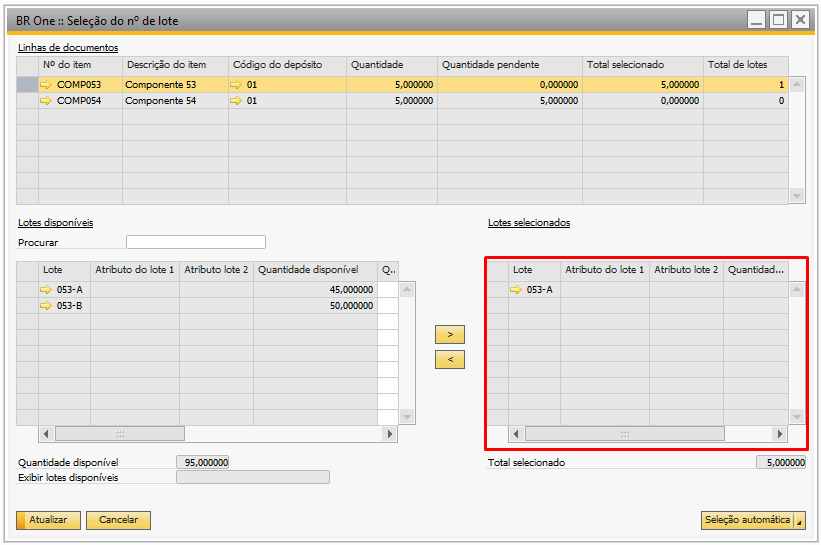

Seleção de lote automática por data de vencimento
Na aba BR One (Administração > Inicialização do sistema > Configurações do Documento), temos o parâmetro para Obrigar a seleção de lotes com base na data de vencimento mais antiga. Isso determina se a seleção dos lotes levará em consideração o lote com a data de vencimento mais antiga.
Quando o parâmetro está desmarcado, a seleção dos lotes com a data de vencimento mais antiga não é obrigatória. Nesse caso, é permitido selecionar os lotes manualmente ou utilizar o botão de “Seleção automática”.
Quando o parâmetro está marcado, a seleção manual dos lotes com a data de vencimento mais antiga não será permitida manualmente. A seleção deve ser feita exclusivamente pelo botão de “Seleção Automática”, que selecionará automaticamente os lotes com a data de vencimento mais antiga.
Seleção do Número de Lote por Data de Vencimento
Na tela de seleção de lotes, foi adicionado um botão para auxiliar nesse processo. Esse botão oferece três opções:
Linha selecionada;
Todas as linhas;
Limpas todas as linhas.
Linha Selecionada:
Realiza a seleção de lotes apenas para a linha que estiver selecionada na matriz “Linhas de Documentos”.
Ao selecionar essa opção, caso o parâmetro citado acima esteja desmarcado, a seguinte mensagem será exibida:
Se a resposta for Sim, será selecionado o lote com data de Vencimento mais antiga, caso a resposta seja Não, será selecionado um lote aleatoriamente.
Porém, se o parâmetro estiver marcado, a mensagem mostrada acima não será exibida, por ser obrigatório que os lotes sejam selecionados considerando a data de vencimento mais antiga. Para garantir que os lotes selecionados são os com data de vencimento mais antiga, não será permitido realizar a seleção manual dos lotes, portanto os botões com essa funcionalidade não poderão ser utilizados.
Caso seja clicado nas setas, a seguinte mensagem será exibida:
BR One :: Não é permitido selecionar os lotes manualmente.
Todas as Linhas:
Aplica a seleção de lotes para todas as linhas da matriz “Linhas de Documentos”.
Realiza a seleção automática do lote para todas as linhas. O processo ocorre semelhante ao descrito acima, tendo como única diferença que os lotes serão atribuídos para todas as linhas e não somente para a que estiver selecionada.
Limpar Todas as Linhas:
Remove a seleção de lotes de todas as linhas da matriz “Linhas de Documentos”.
Limpa todos os lotes que estiverem na matriz “Lotes selecionados”. Para isso, o formulário precisa estar atualizado e, caso não esteja, uma mensagem de erro será exibida.
BR One :: O formulário precisa estar atualizado para executar essa operação.
Telas em que poderão ser utilizadas:
Pedido de transferência de estoque;
Transferência de estoque;
Saída de insumos;